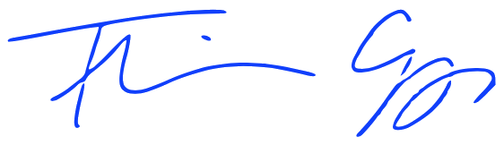

Ez az oldal, az én publikus  Jekyll "játszóterem", ami igazán jól elszórakoztatott a vele töltött időben. Messze jóval szórakoztatóbb dolognak tartom ezt, mint egy
Jekyll "játszóterem", ami igazán jól elszórakoztatott a vele töltött időben. Messze jóval szórakoztatóbb dolognak tartom ezt, mint egy  Wordpress (ismerem, többször futottam már neki) vagy akár egy
Wordpress (ismerem, többször futottam már neki) vagy akár egy  Drupal (nem igazán használtam még) blogmotor / tartalomkezelő rendszerrel való játszadozás. Az eddig megszerzett tapasztalatok alapján meggyőződésem, hogy igazán egyedi megjelenésű, gyors relációsadatbázis-kezelő funkciókat nem igénylő megoldást manapság ebben érdemes készíteni.
Drupal (nem igazán használtam még) blogmotor / tartalomkezelő rendszerrel való játszadozás. Az eddig megszerzett tapasztalatok alapján meggyőződésem, hogy igazán egyedi megjelenésű, gyors relációsadatbázis-kezelő funkciókat nem igénylő megoldást manapság ebben érdemes készíteni.
Mivel mára már majdnem minden tartalom fenn van, és majdnem mindent megírtak már az Interneteken, ezért én ezeken az oldalakon nagyon sokat fogok idézni majd másoktól, a képeket, videókat és más médiatartalmat is igyeXem mindig máshonnan belinkelni, kivéve persze azokon a helyeken, ahol azt gondolom, hogy valamit még én hozzá tudok tenni a már fentlévő tartalomhoz vagy esetleg a tartalom annyira egyedi / személyes, hogy csak nálam van meg.
Nagyon nagy aktivitásra itt azért senki ne számítson, mert ezek az oldalak leginkább még azért maradtak csak fenn, hogy az önéletrajzomat valahol folyamatosan frissíthessem és ha kell innen egyszer majd tovább tudjam osztani az érdeklődőknek...
Nincsenek nagy illúzióim azzal kapcsolatban sem, hogy itt valami szuper magyarázattal fogok szolgálni bárkinek is bármire, de amit megpróbálok összehozni, az végül egy őszinte múltbarévedés lesz a javából.

"Ez afféle üzenet itt. Nincs miért tagadni, hatékonysága kb. tengerbe hajított palackéval azonos, de helyes ez így. Az üzenet, tartalmát tekintve, meglehetősen ködös, inkább csak valami kis izé. Arról akar szólni, hogy "vigyázz, ne dőlj be minden hülyeségnek". De ez így túlontúl sommás és mindenféle árnyalat nélkül való.
Arról akar szólni tehát ez az üzenet, hogy ne essünk ugyanabba a hibába az internet kapcsán, amiben egyszer már a TV kapcsán beleestünk. Egy pillanatig se higgyük el, hogy ez önmagában jó. Szintúgy ne higgyük el, hogy bármilyen értelemben megváltja vagy csak megjavítja a társadalmat.
Fenét.
Az interneten már most zajlik az a folyamat, amelynek eredménye egy hatalmas, interaktív fogyasztói izé lesz, mondjuk Metaverzum, és csak annyiban lesz interaktív, amennyire a fogyasztásra való serkentés megkívánja. A TV-vel ellentétben az internet sokféle rászokási lehetőséget kínál: aki nem szokott rá a www-re, azt talán az irc-re lehet ránevelni és így tovább. Ez a sokféle függési lehetőség hamis magabiztosságba ringathatja a felhasználót, aki azt hiheti, végre ő az, aki válogat. Hehe. A TV-vel ellentétben az internetes etetőgép azonnal reagálhat, ha unod őt; olyan lesz, mint egy rossz ágyas, mindent megpróbál majd, hogy csak vele foglalkozz.
Ez egyébként rendben is van így.
Az üzenet, amiről most beszélünk, arról is szól még, hogy vége van a hőskornak, és tulajdonképpen jó is, hogy így van. Az eszünket kellene használni most talán jobban, mint a TV-zés hajnalán, szóval ne kábuljunk el annyira. Valójában minden jól van az internettel kapcsolatban, ekkora valami és önálló életet él... szóval kívül esik a jó vagy a rossz megítélésén, és ez az, amiért minden rendben jól van vele kapcsolatban. Mûködik és kész. Ebben az a jó, hogy valójában nálunk van a billentyûzet meg az egér. Az üzenet arról szól, hogy ezt nem kéne elfelejteni.
Végre eszembe jutott." (CCFZ: Palack a tengerben)
{% assign m = post.date | date: "%-m" %}{{ post.date | date: "%Y., " }}{% case m %}{% when '1' %}január{% when '2' %}február{% when '3' %}március{% when '4' %}április{% when '5' %}május{% when '6' %}június{% when '7' %}július{% when '8' %}augusztus{% when '9' %}szeptember{% when '10' %}október{% when '11' %}november{% when '12' %}december{% endcase %}{{ post.date | date: " %-d." }},
{% capture words %}{{ post.content | number_of_words | minus: 250 }}{% endcapture %}{% unless words contains "-" %}{{ words | plus: 250 | append: " szó, elolvasásához kb.: " }}{% endunless %}{% capture words %}{{ post.content | number_of_words | minus: 250 }}{% endcapture %}{% unless words contains "-" %}{{ words | plus: 250 | divided_by: 180 | append: " perc kell" }}{% endunless %}|{% assign author = site.data.authors[post.author] %}
{% if author.display_name and author.email %}
{{ author.display_name }}
{% else %}
{{ author.name }}
{% endif %}
{% if author.gravatar %} {% endif %} |
[{{ post.category }}]
{% endif %} |
[{{ post.category }}]
{% for tag in post.tags %}
#{{ tag }}
{% endfor %}

{% endfor %}